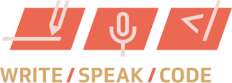
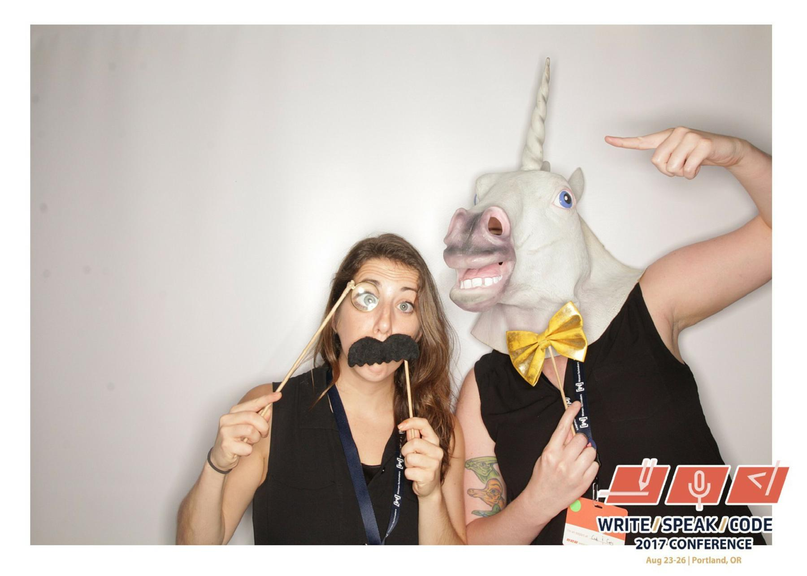

Innovation & Side Projects
by Liz Shaw

Hi! I'm Liz.
- Tech Lead at HubSpot in Boston
- Chapter Leader of Tech Ladies Boston & Instructor for Girl Develop It Boston
-
Part unicorn

Pushing the Envelope
-
How do we encourage creativity?
- Brainstorming sessions
- Code recesses
- Most organizations want to be seen as thought leaders in specific spaces
- Requires individuals to become thought leaders
Often we get stuck doing the same thing faster
How do side projects help?
- Developers refine and improve their skillset
- Exposure to new technologies
- Stumble upon new ways to solve problems
- Encourages failure & venturing into the unknown
- Reduces decision paralysis; build something that would make you or your team's lives easier
- Gives employees the time and space to listen to their hearts and explore the things they are interested in
You don't need to know anything in advance
Success Stories
- Gmail
- Craigslist
- Post-It Notes
- Spotify Hack Weeks
- Google's 20% Rule
Oh, and me